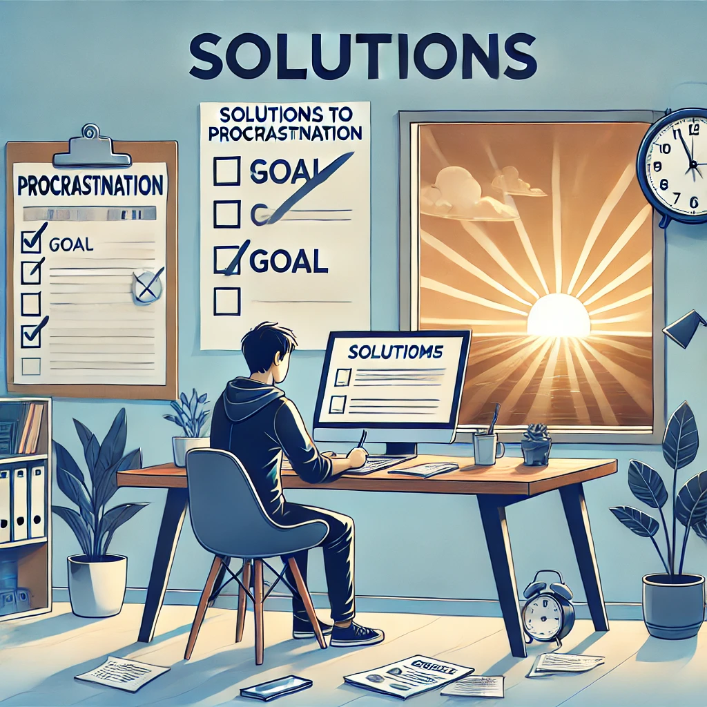

What is Procrastination?
Procrastination is the act of delaying or postponing tasks. It often involves choosing short-term gratification over long-term goals, which can lead to stress and missed opportunities.

Procrastination is the act of delaying or postponing tasks. It often involves choosing short-term gratification over long-term goals, which can lead to stress and missed opportunities.
There are many reasons why people procrastinate, including fear of failure, lack of motivation, and perfectionism. Understanding these triggers can help us address them effectively.

Overcoming procrastination involves setting clear goals, breaking tasks into smaller steps, and practicing self-compassion. Remember, progress is more important than perfection.
